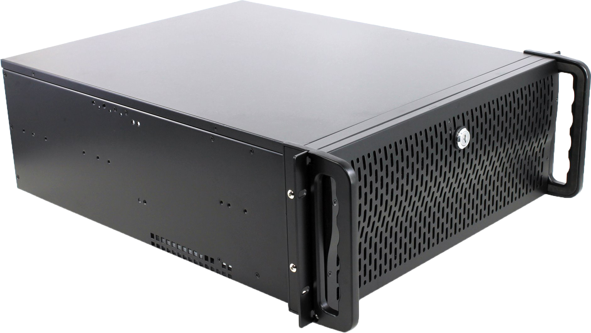

A hard disk drive (HDD), hard disk, hard drive, or fixed disk is an electro-mechanical data storage device that stores and retrieves digital data using magnetic storage and one or more rigid rapidly rotating platters coated with magnetic material. The platters are paired with magnetic heads, usually arranged on a moving actuator arm, which read and write data to the platter surfaces. Data is accessed in a random-access manner, meaning that individual blocks of data can be stored and retrieved in any order. HDDs are a type of non-volatile storage, retaining stored data even when powered off. Modern HDDs are typically in the form of a small rectangular prism.
Introduced by IBM in 1956, HDDs were the dominant secondary storage device for general-purpose computers beginning in the early 1960s. HDDs maintained this position into the modern era of servers and personal computers, though personal computing devices produced in large volume, like cell phones and tablets, rely on flash memory storage devices. More than 224 companies have produced HDDs historically, though after extensive industry consolidation most units are manufactured by Seagate, Toshiba, and Western Digital. HDDs dominate the volume of storage produced (exabytes per year) for servers. Though production is growing slowly, sales revenues and unit shipments are declining because solid-state drives (SSDs) have higher data-transfer rates, higher areal storage density, better reliability, and much lower latency and access times
The revenues for SSDs, most of which use NAND flash memory, slightly exceed those for HDDs. Flash storage products had more than twice the revenue of hard disk drives as of 2017. Though SSDs have four to nine times higher cost per bit,they are replacing HDDs in applications where speed, power consumption, small size, high capacity and durability are important. Cost per bit for SSDs is falling, and the price premium over HDDs has narrowed.